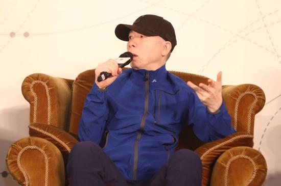
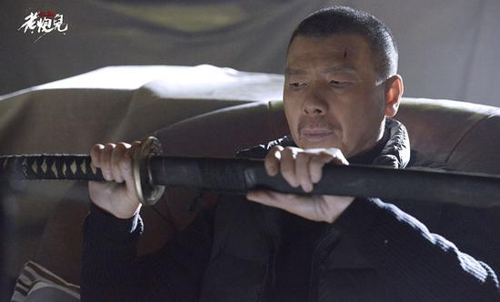

您现在的位置是：首页>模板分享>个人博客模板
老炮儿冯小刚骂小鲜肉们太娘究竟错了吗？
发布时间：2017-06-22编辑：Imitater
文/新浪专栏 水煮娱 肥罗君
冯钢炮又出手了，这一次，瞄准的是小鲜肉。一是痛批“有流量的，哪有会演戏的”，二是痛斥小鲜肉太娘，“搔首弄姿，想脱又不敢脱”。

6月19日，新浪娱乐主办的新浪潮论坛聚起了冯小刚、徐峥、陆川、宁浩四位导演，从创作者的角度，把脉当下演员行当到底出了什么问题，率先开炮的冯小刚直指现在演艺圈盛行的“小鲜肉”文化，狠批“这些孩子啊，太娘了”，直呼这样的现象很不正常，辛辣发言引发网友议论纷纷、看法有褒有贬。
有网友认为“说的对，男孩就应该阳光爷们”，也有人反驳称“不能一棍子打死吧”，还有人直接吐槽冯小刚，“男的都应该包装成冯小刚那样，动不动骂娘那种吗”？
可以看到，冯小刚这一次的炮轰评论也可以总结来说是褒贬不一，但无论是褒是贬，都要感谢冯小刚提出了一个很好的问题，小鲜肉的问题在这个行业是如此明显，但有些人避而不谈，有些人谈了也没人关注，只有冯小刚，成功将一个早就应该摆上台面，却极少被摆上台面的问题，一下变成了热门话题，并且将这个话题猛地丢到了媒体和大众眼前，逼着所有人不得不去正视。

这样一个大导演在一个原本是电影论坛上的发言，就这样意外地把一个小鲜肉的娱乐产业话题带到了大众的关注中。我们正好可以聊聊小鲜肉到底是什么，他们代表着谁的趣味，以及鲜肉和电影工业的关系应该是怎样的。
当然最直接的问题依然是：冯小刚骂小鲜肉，到底骂得对不对？为什么这次炮轰没有点名任何一个具体男星，却能够一石激起千层浪，引发叫好声一片，又激起质疑声一片？而比起冯小刚说的小鲜肉到底是谁更重要的是，冯小刚到底能不能骂醒影视产业盛行的“鲜肉崇拜”？
冯小刚到底骂了什么？
回到事件现场，先让我们看一下冯小刚到底说了什么？
其实冯小刚首先怼的不是小鲜肉，而是现在的综艺热。
冯小刚认为电影演员、电视演员和综艺演员，应该是三波不同的演员，各有各的专长。而在中国，现在这三者是合一的，可能对综艺没有什么影响，但是对电影的伤害是非常大的。冯小刚以好莱坞为例，他表示好莱坞的体系存在了这么多年，电影大腕是不会去演综艺的。“如果观众可以免费在电视上看到他们，为什么还要花钱去电影院看。”
冯小刚还对一些老演员还在坚持自我表示了赞赏：比如姜文、葛优，都不会去上综艺节目，但是年轻演员们基本都去上综艺。
关键字词：冯小刚 导演 小鲜肉
上一篇：程序员应该如何高效的工作学习
下一篇：柴米油盐的生活才是真实